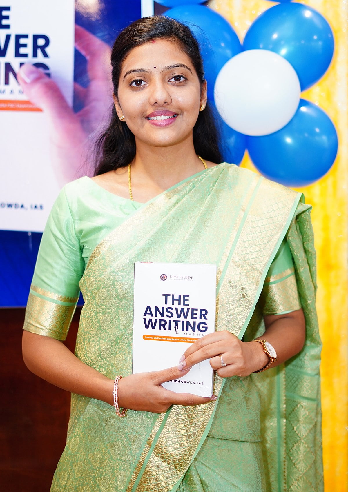

IAS(MP-crade(2019))
"THE ANSWER WRITING MANUAL",
~A BOOK BY SRUSTI DESHMUSKh(IAS)
Srushti Deshmukh,who became an IAS in her 1st UPSC attempt, was born on 28 March 1995 in Kasturba Nagar, Bhopal, MP, and is mostly popular for securing fifth rank in the UPSC exam 2018. Aside from this, videos of her duty usually go viral on YouTube and Instagram reels, due to which She has got more popularity. IAS Srishti Deshmukh finished her primary education at Carmel Convent School, BHEL, Bhopal, and Later, She begin engineering studies at Laxmi Narayan Engineering College after Middle, and from the last semester of engineering, he begin preparations for UPSC. Srushti’s father, Jayant Deshmukh, works in a private company and is an engineer. Her mother, Sunita Deshmukh, is a teacher in the kindergarten section. She has one sibling, a younger brother who studies in class seven. She has acknowledged her parents, family, grandmother, teachers, mentors, and closest friends for their support in aiding her in succeeding in this exam. Srushti Jayant Deshmukh is married to Dr. Nagarjun B Gowda IAS. Both of them belong to IAS Batch 2019. Both of them met at LBSNAA – Lal Bahadur Shastri National Academy of Administration.